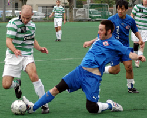

|
Hachioji Koen Saturday 26th April,
Celts cruised to comfortable 3-0 win over Saitama Jets, notching up our first victory over the Jets in a while and ensuring a nail biting regulation battle climax for Jets in the their final game with BFC Vagabonds. The Celts management team had coerced most of the team out to Hachioji Park very early on the Saturday morning to ensure a decent warm up and to run through some drills on set pieces prior to the game, the extra effort of getting up at an unearthly hour on a Saturday morning was soon to be evident, pure genius on behalf of the management team if I do say so myself.
Celts fielding a strong line-up with the ever reliable Aki in sticks, Chris, Ben, Tomo and Will in defence, Gavin taking on the “Rick” role in front of defence, Peter, Toru, Henry & Take in the middle and Vince as the lone striker. With Jonesy, Wayno & Freddy presenting formidable choices on the bench.
Celts kicked off the match and the first 15 minutes was majority Celts with the odd Jets attack. Celts were working the ball around the park and using the width of the Hachioji pitch to great effect. On 20 minutes Celts won a corner which was taken by Toru and found Gavin in the box, whose goal ward bond header was punched out by the keeper and found it’s ay to Peter in the penalty area, Peter bought the ball under control, got past his defender and stroked the ball home for the Celts opening goal (see above re: drills on set pieces).
The 2nd Celts goal came 4 minutes later, when Chris intercepted a Jets attack on the right and cleared from the ball up field from half way in the Celts half with a pin point accurate pass to find Peter in the Jet’s half, with his back to goal Peter spun his defender and took the ball in to the Jets box, eluding the centre back coming across to cover, Peter hit a fierce shot into the top left hand corner leaving the keeper no chance. The First half ended 2-0.
The 2nd half was pretty much the same as the first with Celts having far more possession and numerous opportunities on goal with Vince making a nuisance of himself up front, Joneys, Take, Will, Chris, Freddy & Wayno all making extensive use of the wings to attack and Henry and Toru marshalling the midfield. The occasional Jets counter attack that was dealt with by Tomo, Ben & Aki (playing as a sweeper at times). Half way through the second half, Celts won a free kick half way into Jets territory, Toru stepped up and his cross come shot come lob beat the advancing Celts attack, the retreating Jets defence and the keeper only to be halted by the cross bar. With a little more the 5 minutes left in the game the third Celts goal came from a corner (see above re: drills on set pieces). Will’s corner was headed in by Gavin at the near post from an acute angle which more then made up for the sitter he missed from a earlier corner when he was unmarked at the far post!
On the whole a deserved result for the Celts who have seen far better performances from the Jets in past encounters, no doubt Jets were missing some of the usual suspects. The game was well played by both teams and the referee.
Report by Sam Yusef
|